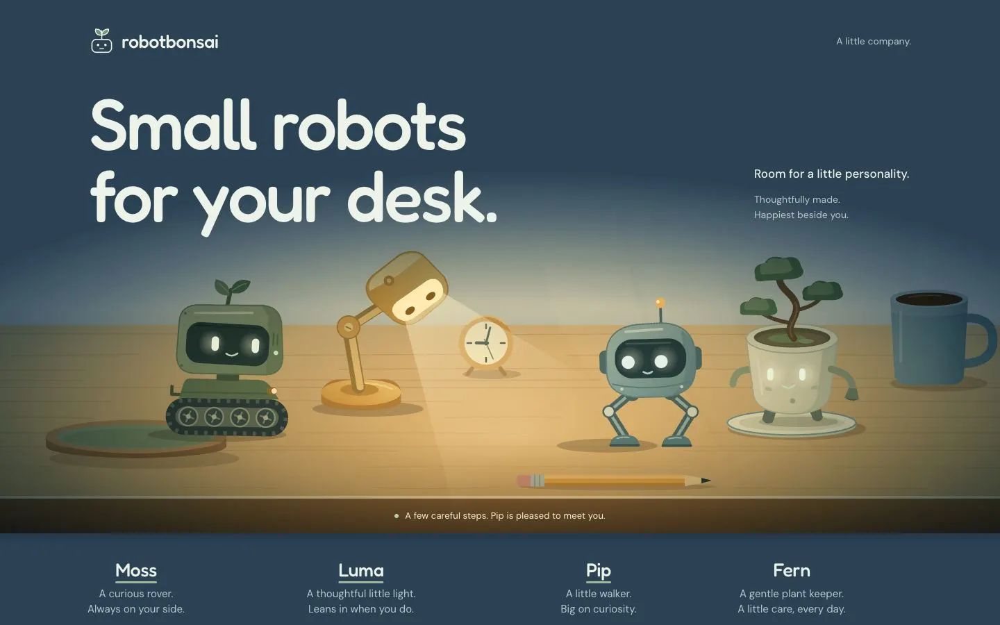

Robot Bonsai
One illustrated desk scene where every robot is a button.
A one-page site for a small company making four desk robots, each with its own name and job.
Visit robotbonsai.com

Design decisions
- The hero is a single illustrated scene: a wooden desk at night under a navy wall, with a clock, a pencil, a mug and the four robots, lit by a warm cone from the lamp. The headline sits on the wall above, in the dark area the light does not reach.
- Character design: every robot shares the same face, two glowing oval eyes and a small smile on a dark screen, so four very different bodies (a tracked rover with a sprout, a desk lamp, a two-legged walker, a plant pot with arms) read as one family.
- Each robot is a button. Tapping one animates it in place and rewrites the line in the caption strip under the desk.
- The caption strip starts with a hint, 'Tap a robot. Each one has a job.', so the scene explains itself without a tutorial or an arrow.
- Below the scene the four names repeat as a plain row with a two-line description each. A name gets an underline once its robot has been tapped and keeps it, so the row doubles as a record of who you have met.
- Type: a rounded display face for the headline and the robot names, with DM Sans for body copy, in cream (#EEF3EA) on deep blue. The rounded letters match the soft, rounded robots.
- Mobile: the desk is redrawn taller rather than cropped. The robots sit in two rows, the lamp moves to the right and faces the other way, and the names below become a two-by-two grid.
On a phone
Robot Bonsai has a single theme, so there is one set of captures.
The flow, step by step



Further down the page